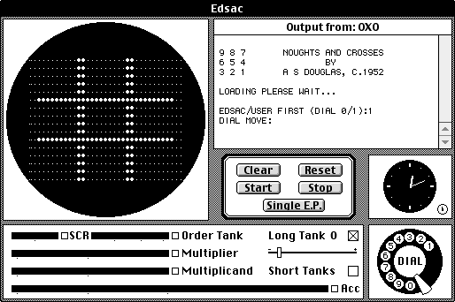

History
Tic-Tac-Toe
Three-in-a-row games have been played for centuries. They can even be traced back to ancient
Egypt, where game boards have been found on roofing tiles dated from 1300 BC. One of the earliest
known variations of tic-tac-toe was played in the Roman Empire, around the first century BC, called
terni lapilli. The first print reference to "noughts and crosses" appeared in 1858, and the first
reference to "tick-tack-toe" appeared in 1884, although it referred to a different game. "noughts and
crosses" was renamed to "tic-tac-toe" by the US in the 20th century.
In 1952, computer scientist
Sandy Douglas developed a version of tic-tac-toe, it became one of the first known video games. It also
featured a computer player that could play perfect games against a human opponent. This program was written for
the Electronic Delay Storage Automatic Calculator, and can be seen in the image to the left.
Many different
variations of tic-tac-toe have been created since, especially in recent years. Some of these variations are:
Quantum tic-tac-toe, revenge n-in-a-row, 3 dimensional tic-tac-toe, Ultimate tic-tac-toe, and 4x4 tic-tac-toe.
Rock Paper Scissors

Rock Paper Scissors has a long and rich history. The World Rock Paper Scissors Organization has found that it can be
dated back to 206 BCE - 220 CE. This was found in a book, Wuzazu, written by Xie Zhaozhi, a popular Chinese Ming dynasty writer.
In the book, the game was referred to as Shoushiling, another book named Note of Liuyanzhai by Li Rihua also makes mention of this
game, further reinforcing the game was created within this time period in Ancient China. Of course, these games did not always use rock,
paper, and scissors as items, but the A>B B>C C>A format is maintained throughout the history of this game. Other cultures have adopted
this game overtime, such as the Japanese with sansukumi-ken and kitsune-ken. In the early 20th century, the game became
more widespread, beyond East Asia. Leading to the adoption of the English variation of the game: rock paper scissors. Shown to the left is
a depiction of ancient rock paper scissors.
Rock paper scissors has had an interesting part in history since then. Being used in 2006, when American federal judge Gregory
Presenell ordered opposing sides of a court case to settle a debate over rock paper scissors. In Japan, researchers have also taught
chimpanzees to identify winning hands in rock paper scissors.
Rock paper scissors is a very widespread game which is popular
in our culture due to its ease of play, accessibility, and widespread knowledge of the game. It has been used to settle many
debates and will be played by many for years to come.
Sources:
Alyssa Choi - Tic-Tac-Toe, momath.org/wp-content/uploads/2021/08/Alyssa-Choi-Tic-Tac-Toe.pdf. Accessed 24 Apr. 2024.
Cohen, D.S. “Oxo Aka Noughts and Crosses - the First Video Game.” Lifewire, Lifewire, 12 Mar. 2019, www.lifewire.com/oxo-aka-noughts-and-crosses-729624.
“When Was Rock Paper Scissors Invented? - World Rock Paper Scissors Association.” World Rock Paper Scissors Association - Professional Rock Paper Scissors, 2 Nov. 2021, wrpsa.com/when-was-rock-paper-scissors-invented/.